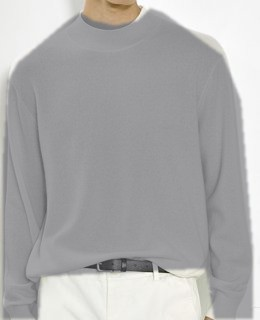
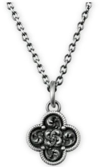
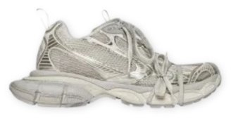
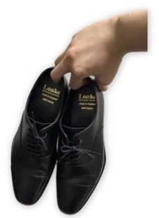
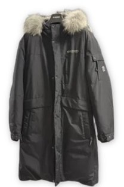
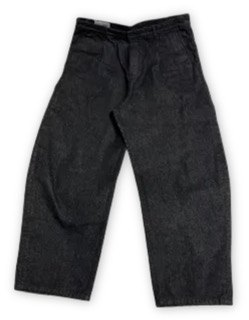

추천
RECTO 그레이 헤링본 코트 + 더니트컴퍼니 그레이 캐시미어 모크넥 니트
그레이 코트에 그레이 니트를 겹친 톤온톤 코디예요. MR PORTER도 한 색 코디는 톤과 소재를 살짝 바꾸면 밋밋하지 않다고 하는데, 헤링본 울과 캐시미어 결이 그 역할을 해요. 하의와 신발은 블랙으로 내려 아래를 정리했고, 바람 부는 날 모크넥이 목을 막아줘요.

코트RECTO 그레이 헤링본 코트단추를 잠가 바람을 막고, 실내에선 열어 입어요.

니트더니트컴퍼니 그레이 캐시미어 모크넥 니트모크넥이 코트 깃 사이로 보이게 해 그레이 톤을 이어요.

청바지JUNNE 블랙 스트레이트 청바지JUNNE 블랙 스트레이트 청바지로 주말답게 힘을 빼요.

구두DR. MARTENS 블랙 레더 구두DR. MARTENS 블랙 레더 구두로 코트 무게감에 맞춰요.

목걸이줄로리아 실버 목걸이줄로리아 실버 목걸이를 모크넥 위로 살짝 보이게 해요.

크로스백생로랑 블랙 나일론 크로스백생로랑 블랙 나일론 크로스백으로 손을 가볍게.

대안
K2 차콜 후드 패딩 + POTTERY 차콜 폴로 니트
오래 걷거나 바람을 더 막고 싶을 때의 따뜻한 버전이에요. 차콜 패딩과 차콜 폴로 니트에 그레이 와이드 청바지, 그레이 청키 스니커즈로 회색 계열만 이어 편하지만 정돈돼 보여요.

패딩K2 차콜 후드 패딩후드까지 올리면 강한 바람에도 든든해요.

니트POTTERY 차콜 폴로 니트카라를 패딩 밖으로 꺼내 얼굴 주변을 단정하게.

청바지노이어 그레이 와이드 청바지노이어 그레이 와이드 청바지로 하체를 여유 있게.

스니커즈발렌시아가 그레이 청키 스니커즈발렌시아가 그레이 청키 스니커즈는 휴일에 쓰기 좋아요.

백팩YOUTH 블랙 백팩YOUTH 블랙 백팩으로 양손을 비워요.

대안
쿠어 카멜 더블 코트 + TONYWACK 블랙 케이블 니트
포인트 컬러를 카멜 하나만 쓴 버전이에요. GQ 코리아 기온별 코트 가이드처럼 4~8°에는 두툼한 울 코트에 니트를 받치는 게 좋고, 안쪽을 전부 블랙으로 맞춰 카멜 코트만 돋보이게 했어요.

코트쿠어 카멜 더블 코트더블 단추를 잠가 입으면 바람에도 실루엣이 유지돼요.

니트TONYWACK 블랙 케이블 니트도톰한 케이블 니트라 코트 안에서 보온을 책임져요.

청바지ART IF ACTS 블랙 투턱 청바지ART IF ACTS 블랙 투턱 청바지로 격식과 편안함 사이를 맞춰요.

구두Loake 블랙 캡토 구두Loake 블랙 캡토 구두로 코트 격에 맞게 마무리해요.

숄더백르메르 블랙 호보 숄더백르메르 블랙 호보 숄더백.

옷장 자동 조합
파브레가 네이비 체크 셔츠 + PRADA 블랙 숏 패딩
같은 날씨와 격식 기준(무채색 위주, 포인트 컬러는 하나까지)으로 옷장에서 자동으로 고른 조합이에요.

셔츠파브레가 네이비 체크 셔츠

패딩PRADA 블랙 숏 패딩

긴바지쿠어 아이보리 와이드 긴바지

스니커즈화이트 레더 스니커즈
크로스백생로랑 블랙 나일론 크로스백

옷장 자동 조합
ART IF ACTS 워시드 블랙 셔츠 + DISCOVERY 블랙 롱 패딩
같은 날씨와 격식 기준(무채색 위주, 포인트 컬러는 하나까지)으로 옷장에서 자동으로 고른 조합이에요.

셔츠ART IF ACTS 워시드 블랙 셔츠

패딩DISCOVERY 블랙 롱 패딩

청바지ART IF ACTS 블랙 벌룬 청바지

슬립온SKECHERS 블랙 니트 슬립온
백팩YOUTH 블랙 백팩

옷장 자동 조합
ART IF ACTS 라이트그레이 링거 긴팔 티 + 지오송지오 블랙 후드 패딩
같은 날씨와 격식 기준(무채색 위주, 포인트 컬러는 하나까지)으로 옷장에서 자동으로 고른 조합이에요.